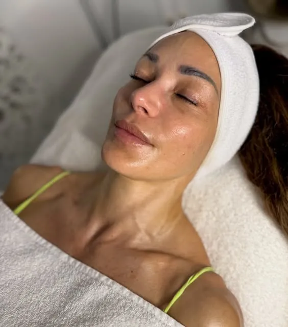

90 MinutenAquafacial & Microneedling
90 Minuten · inklusive Hautanalyse und persönlicher Pflegeempfehlung · wahlweise mit Mikrodermabrasion
180 €
250 €bei Einzelbuchung
70 € Vorteil
Ideal bei großen Poren, fahlem Teint, ersten Fältchen und Aknenarben. Bereits nach der ersten Behandlung wirkt die Haut feiner und ebenmäßiger. Mit drei bis vier Sitzungen im Abstand von vier Wochen erreichen Sie ein nachhaltiges Ergebnis.
- Hautanalyse
- Aquafacial
- Microneedling
- Wirkstoffserum
- Maske & Pflege
„Ich hatte heute ein Aquafacial mit Microneedling bei Schahira und bin wirklich sehr zufrieden.“